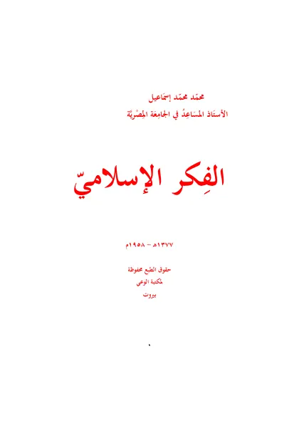

الفكر الإسلامي
Fikrul Islam
Baca Fikrul Islam (الفكر الإسلامي) karya Taqiyuddin an-Nabhani secara gratis di Maktabah Ilmu: teks Arab, Indonesia, Inggris. Tanpa daftar, tanpa iklan.
Buka kitab iniLihat lemari ilmu
Baca Fikrul Islam (الفكر الإسلامي) karya Taqiyuddin an-Nabhani secara gratis di Maktabah Ilmu: teks Arab, Indonesia, Inggris. Tanpa daftar, tanpa iklan.
Buka kitab iniLihat lemari ilmu